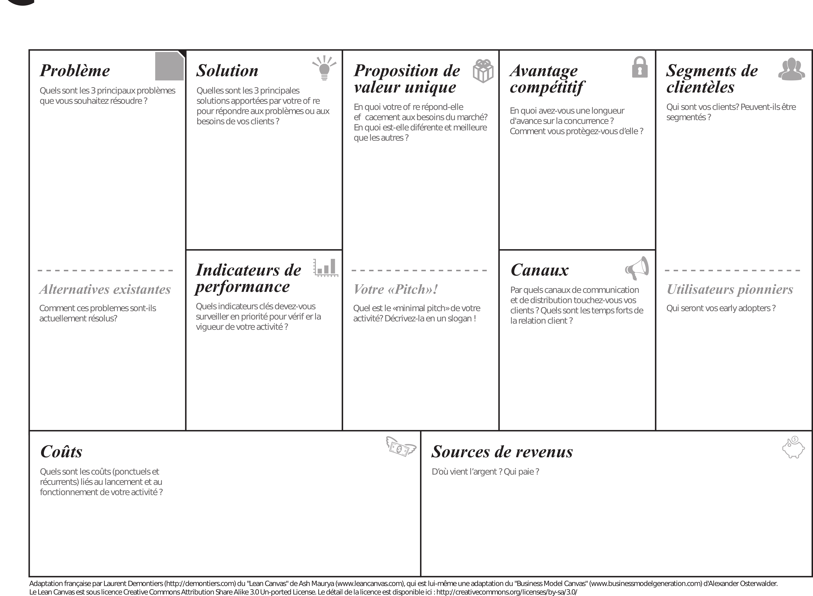
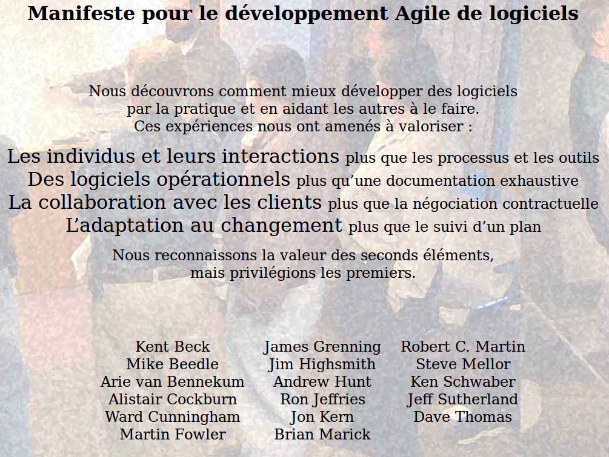

Gestion de Projet¶
LeanCanvas¶
Le Lean Canvas est un document qui vous permet de formaliser très simplement et en quelques mots la méthode du Lean Startup. Vous pouvez en effet poser vos hypothèses et les problèmes de votre cible, noter en quoi votre solution répond aux besoins de vos clients… et vous allez également plus loin, puisque le Lean Canvas rassemble d’autres informations : quelles sont vos sources de revenus ? Quels sont les canaux de distribution que vous allez utiliser pour toucher les clients ? Etc…
Par définition, ce document est très simple à utiliser. Il fait écho à la méthode du Lean Startup - une série d’allers / retours entre l’entrepreneur et ses panélistes représentant sa clientèle - et il est donc constitué seulement de quelques cases que l’on remplit à mesure de ses avancées dans la définition du projet
{kind=link}
Methodologie agile¶
Definie en 2001 : manifeste d’agilité
{kind=link}
1. Les individus et leurs interactions¶
✅ Échecs ou réussites, ce sont bien vos équipes qui sont responsables des projets. Votre prise en compte du facteur humain est donc essentielle.
✅ Intégrer les forces et surtout les faiblesses des interactions humaines dans votre gestion de projet.
✅ L’agilité propose de souder, dynamiser et responsabiliser vos équipes au lieu de les mettre en concurrence.
2. Logiciels (produits, services, etc.) opérationnels¶
✅ Les modèles agiles se veulent avant tout pragmatiques, c’est donc l’opérationnel qui prime toujours. Votre équipe est à la fois auto-organisée et autonome.
✅ Les livraisons intermédiaires, régulièrement proposées à votre client, sont toujours une part conséquente et utilisable de votre solution complète.
✅ La qualité est toujours évaluée en continu pendant votre gestion du projet.
3. La collaboration avec les clients¶
✅ Le contrat doit soutenir votre réussite du projet et non fixer son exécution.
✅ Les interactions fortes et permanentes avec votre client facilitent la négociation.
✅ Les enjeux de l’agilité et ses principes sont bien compris et intégrés par votre client.
4. L’adaptation au changement¶
✅ Les entreprises doivent constamment faire preuve de réactivité face à la concurrence et aux attentes du marché.
✅ L’accélération permanente du progrès technologique augmente l’obsolescence des applications, qui sont contraintes de s’adapter en continu.
✅ L’usage des réseaux sociaux a définitivement révolutionné l’approche des utilisateurs, qui deviennent de plus en plus exigeants.
✅ Le contexte économique oblige les équipes à être capables de produire efficacement le plus de valeur possible pour leurs utilisateurs finaux.